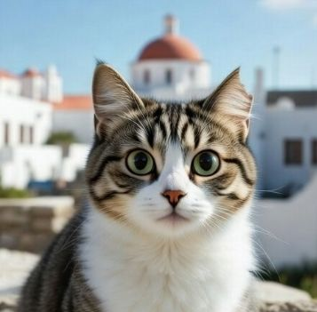

Katten en honden
Op Kos leven zeer veel zwerfkatten. Zwerfhonden zijn er nauwelijks. Niet alle katten zijn “zwerf”: bij sommige is een stukje van het oor afgeknipt – dat betekent dat ze gesteriliseerd zijn.
Er zijn organisaties op het eiland die zich bekommeren om de dieren. Sommige eilandbewoners voeren de katten dagelijks bij. Eén daarvan is Costas.